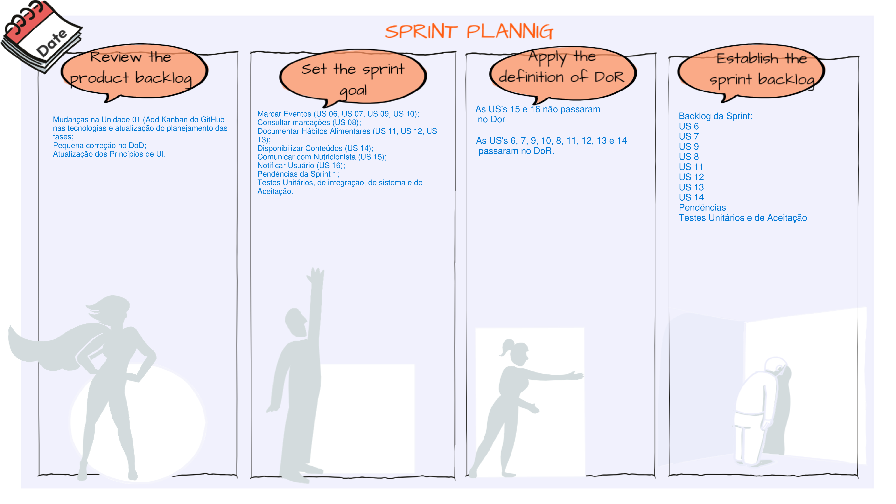
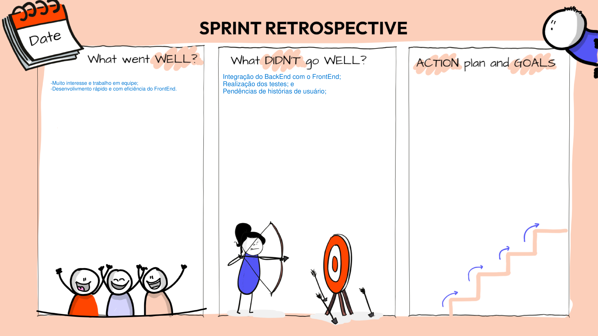
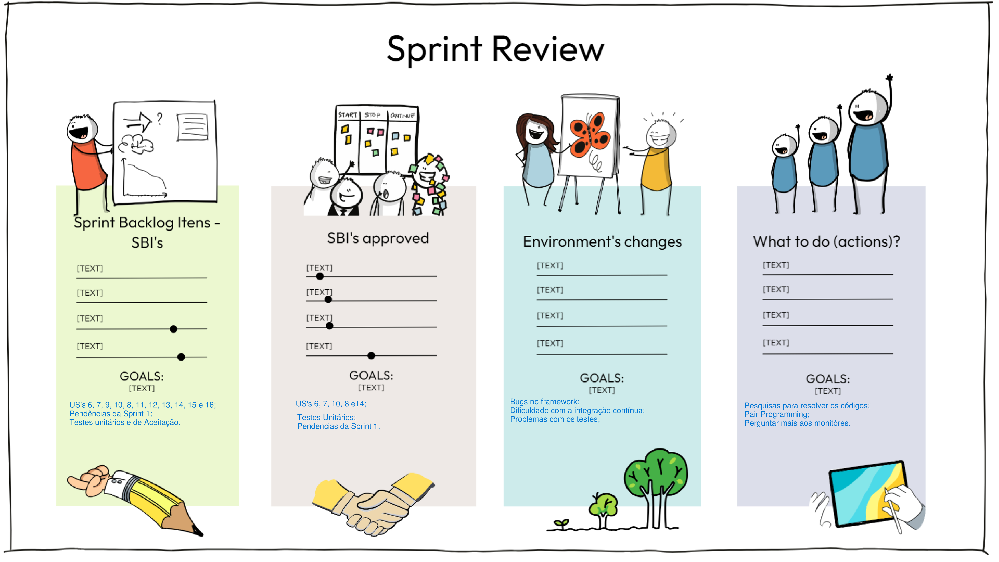

Sprint 2
Data: 21/11/2023 - 13/11/2023
Na Sprint 2, ocorreu a confecção dos critérios de avaliação das histórias do MVP2, efetuamos a integração contínua, as pendências da Sprint 1 e o MVP2.
Critérios de Aceitação
MVP 2
2.1. Marcar Eventos
-
US6:Eu, como funcionário, quero ver eventos futuras para me preparar de acordo;- O funcionário deve ser capaz de visualizar eventos futuros em um calendário;
- O calendário deve mostrar pelo menos mês e semana;
- O calendário deve conter as seguintes informações: data, hora e título;
-
US7:Eu, como funcionário, marcar eventos futuras para me preparar de acordo;- O funcionário deve ser capaz de criar um novo evento.
-
US9:Eu, como funcionário, quero poder desmarcar eventos para maximizar eficiência da clínica;- O funcionário deve ser capaz de desmarcar um evento existente.
-
US10:EU, como funcionário, quero poder alterar dados de eventos para maximizar a eficiência da clínica;- O funcionário deve ser capaz de editar um evento existente.
2.2. Consultar Marcações
US8:Eu, como usuário, quero poder me informar sobre datas de consultas marcadas para evitar cancelamentos e inconveniências;- O usuário deve ser capaz de visualizar uma lista de suas consultas marcadas.
2.3. Documentar Hábitos Alimentares
-
US11:Eu, como funcionário, quero dar feedback de forma consistente sobre os hábitos alimentares de pacientes individuais;- O funcionário deve ser capaz de visualizar os hábitos alimentares de um paciente individual.
- O funcionário deve ser capaz de fornecer feedback sobre os hábitos alimentares do paciente.
-
US12:Eu, como usuário, quero registrar meus hábitos alimentares para ajudar em decisões sobre meu tratamento;- O usuário deve ser capaz de registrar seus hábitos alimentares.
- Os hábitos alimentares registrados devem ser visíveis para o funcionário.
-
US13:Eu, como funcionário, quero me informar sobre os hábitos alimentares diários de pacientes afim de personalizar e ajustar os tratamentos;- O funcionário deve ser capaz de visualizar os hábitos alimentares diários de um paciente.
2.4. Disponibilizar Conteúdos
US14:Eu, como funcionário, quero distribuir conteúdos educativos de forma rápida para múltiplos pacientes, afim de evitar mandar os conteúdos individualmente;- O funcionário deve ser capaz de enviar conteúdos educativos para múltiplos pacientes.
3.1. Comunicar com Nutricionista
US15:Eu, como funcionário, quero me comunicar de forma privada com pacientes afim de manter a confidencialidade médica;- A comunicação entre funcionário e paciente deve ser privada.
3.2. Notificar Usuário
US16:Eu, como funcionário, quero ser capaz de notificar pacientes com informações ao longo do dia afim de reforçar e facilitar o tratamento;- As notificações devem ser enviadas de forma oportuna.
- As notificações devem ser relevantes para o tratamento do paciente.
Sprint
| Sprint Planning - Goal | Marcar Eventos (US 06, US 07, US 09, US 10); Consultar marcações (US 08); Documentar Hábitos Alimentares (US 11, US 12, US 13); Disponibilizar Conteúdos (US 14); Comunicar com Nutricionista (US 15); Notificar Usuário (US 16); Pendências da Sprint 1; Testes Unitários, de integração, de sistema e de Aceitação. | | --- | --- | | Backlog da Sprint | US’s 6, 7, 9, 10, 8, 14; Pendências; Testes unitários e de aceitação; | | Sprint Review | Foram feitos os critétiros de avaliação e a definição de DoD em cada uma das funcionalidades e obtivemos a aprovação da cliente; | | Pendências | US’s 11, 12, 13, 15, 16; Justificativa: por conta do tempo corrido e de acabarem acontecendo muitos erros no framework, na integração contínua e na instalação de pacotes para o desenvolvimento dessas funcionalidades, nós não conseguimos realizar as histórias de usuário. | | Sprint Retrospective | Pontos positivos: muito interesse e trabalho em equipe, desenvolivmento rápido e com eficiência do FrontEnd; Pontos negativos: Integração do BackEnd com o FrontEnd, realização dos testes e pendências de histórias de usuário; |
Pair Programming realizado:
| Dupla | Descrição | Data |
|---|---|---|
| João Lucas e Emivalto | Programação FrontEnd | 23/11/2023 |
| João Lucas e Emivalto | Programação FrontEnd | 24/11/2023 |
| Gabriel e Heloísa | Programação BackEnd | 30/11/2023 |
| Gabriel e Heloísa | Programação BackEnd | 03/12/2023 |
| Caio e Vinícius | Testes Unitários | 05/12/2023 |
| João Lucas e Emivalto | Programação FrontEnd | 11/12/2023 |
| Gabriel e Heloísa | Programação BackEnd | 12/12/2023 |
Template da Sprint Planning

Template da Retrospectiva

Template do Review da Sprint
